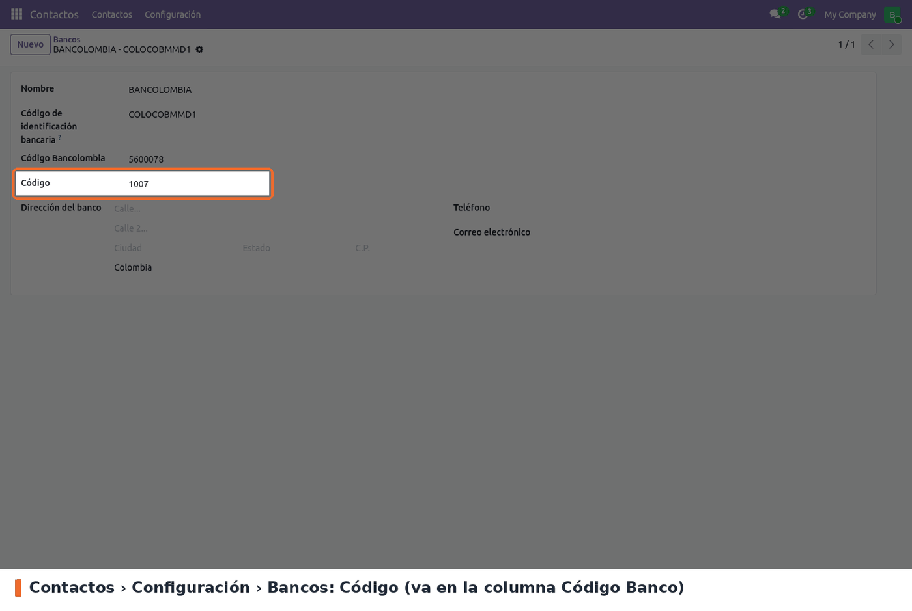
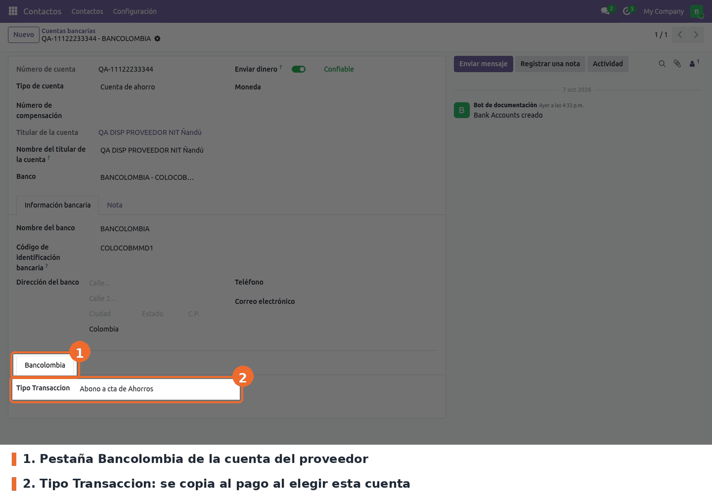
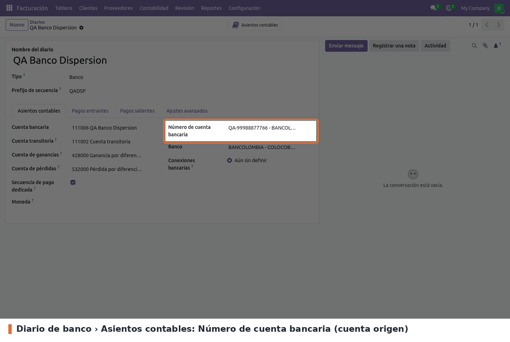
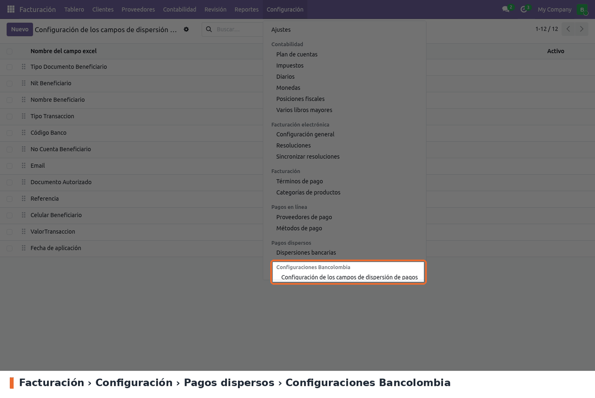
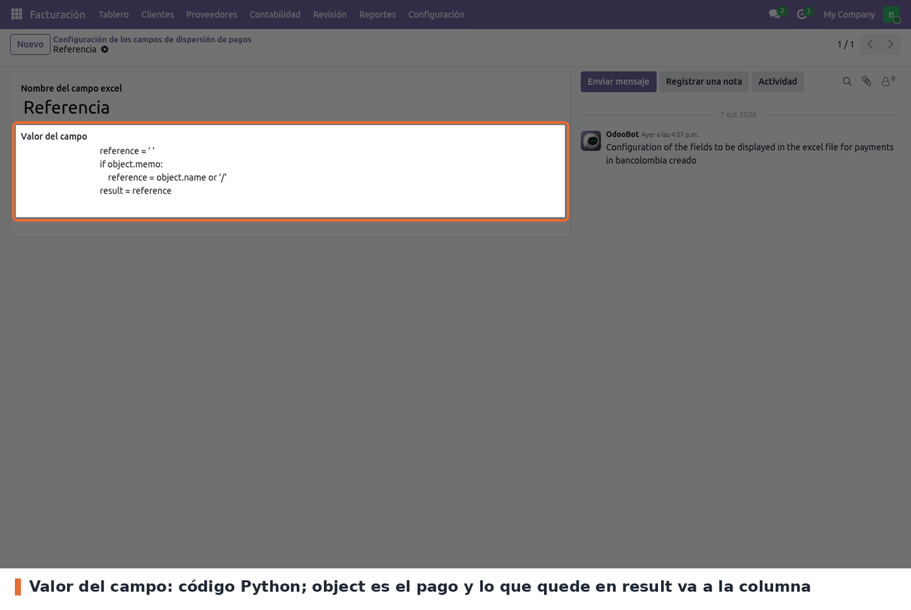
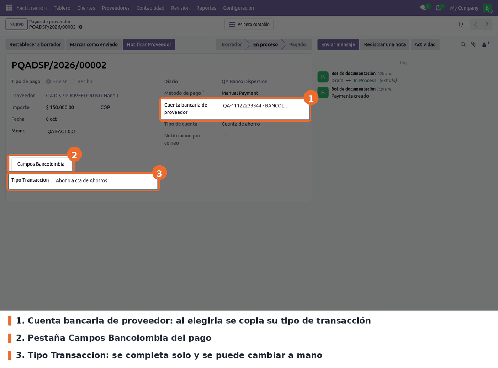
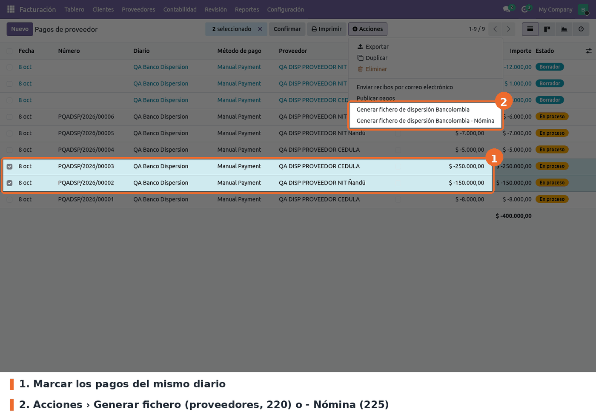
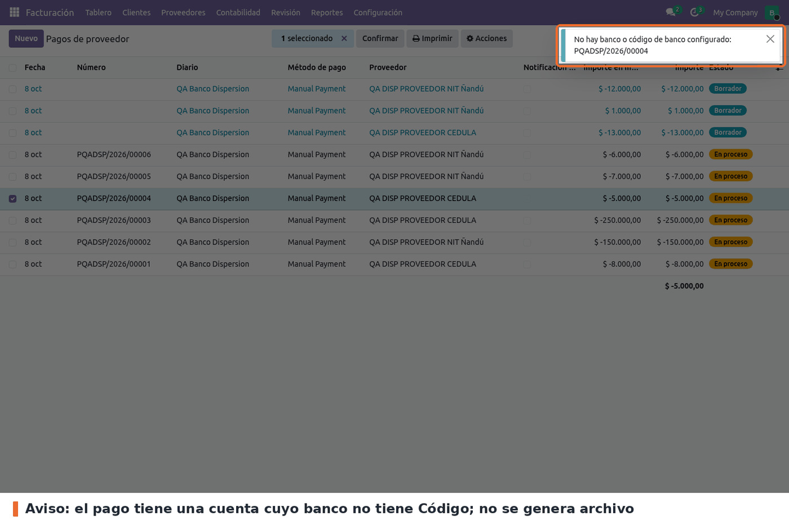
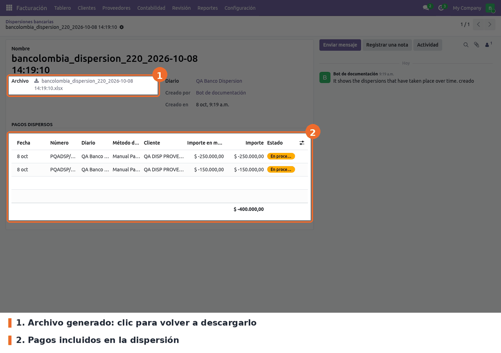

Genera desde la lista de pagos el archivo .xlsx que se copia en la macro PAB de Bancolombia para dispersar pagos a proveedores (tipo de pago 220) o de nómina (tipo 225).
Depende de account_payment_dispersion, que aporta el código de banco, el tipo de cuenta y el
historial de dispersiones.
No hay ajustes que activar. Hay que dejar cargados cuatro datos.
1. Código del banco. Contactos › Configuración › Cuentas bancarias › Bancos, campo Código
(lo agrega account_payment_dispersion; los bancos colombianos vienen con él cargado). Es el valor
de la columna Código Banco del archivo, y sin él el pago no pasa la validación. El campo Código
Bancolombia que agrega este módulo viene cargado en 14 bancos, pero el archivo no lo usa.

Contactos › Configuración › Bancos: campo Código
2. Tipo de transacción de la cuenta del proveedor (la configuración clave). Contactos › Configuración › Cuentas bancarias › Cuentas bancarias, abrir la cuenta del proveedor, pestaña Bancolombia, campo Tipo Transaccion. Normalmente Abono a cta de Ahorros (37) o Abono cta Corriente (27). El banco de la cuenta tiene que tener Código (paso 1).

Cuenta bancaria del proveedor › pestaña Bancolombia: Tipo Transaccion
3. Cuenta origen en el diario. Facturación › Configuración › Diarios, abrir el diario de banco desde el que se paga, pestaña Asientos contables, campo Número de cuenta bancaria. Sale en la fila 2 del archivo (NRO CUENTA A DEBITAR) y su Tipo de cuenta da la letra de TIPO DE CUENTA A DEBITAR (D corriente, S ahorros).

Diario de banco › Asientos contables: Número de cuenta bancaria
4. Columnas del archivo (opcional). Vienen 12 columnas listas. Se revisan en Facturación › Configuración › Pagos dispersos › Configuraciones Bancolombia › Configuración de los campos de dispersión de pagos. El orden de la lista (se arrastra con el asa) es el orden de las columnas: no lo cambies si no cambió el formato de la macro PAB.

Facturación › Configuración › Pagos dispersos › Configuraciones Bancolombia
Cada columna es código Python: object es el pago, y lo que quede en result va a la celda. Están
disponibles env, date, datetime, timedelta y time.

Columna Referencia: número del pago, o '/' si todavía no tiene
Permisos.
account.group_account_user), igual que en 17. En Community ese grupo no lo trae ni
Contabilidad / Administrador: hay que darlo aparte (en modo desarrollador, desde la ficha del
usuario). Sin él, Acciones no muestra las dos opciones.1. Revisar el tipo de transacción en el pago. En Facturación › Proveedores › Pagos, al elegir la Cuenta bancaria de proveedor, la pestaña Campos Bancolombia se completa con el tipo de esa cuenta. Se puede cambiar a mano (por ejemplo a Pago en Efectivo, que no lleva cuenta destino) y el valor manual no se pisa al guardar ni al tocar otros campos; solo se recalcula si se cambia el proveedor o la cuenta.

Pago a proveedor: Cuenta bancaria de proveedor y pestaña Campos Bancolombia
2. Generar el archivo. En la lista de pagos, marcar los pagos (todos del mismo diario) y en
Acciones elegir Generar fichero de dispersión Bancolombia (proveedores, 220) o Generar
fichero de dispersión Bancolombia - Nómina (225). El navegador descarga
bancolombia_dispersion_<220|225>_<fecha hora>.xlsx. Sirven pagos publicados y también en
borrador; un borrador sale con Referencia / porque todavía no tiene número.

Lista de pagos › Acciones: las dos acciones de Bancolombia
3. Si falta un dato, no se genera nada. Odoo muestra un aviso fijo arriba a la derecha con el pago que falla. Los avisos posibles:
Un pago en borrador aparece como Borrador de pago (proveedor).

Aviso: el banco de la cuenta destino no tiene Código
4. Qué trae el archivo. Ejemplo real generado en Odoo 19 con dos pagos de prueba:
220 o
225, I, A1, número de la cuenta origen del diario, D (corriente) o S (ahorros), y la
descripción vacía para completarla en la macro.De dónde sale cada columna: tipo de documento del proveedor (1 cédula, 2 cédula de extranjería, 3
NIT, 4 tarjeta de identidad, 5 pasaporte); su número de identificación sin el dígito de
verificación (la parte antes del guion; si el número no tiene guion la celda sale en blanco);
nombre en mayúsculas con Ñ cambiada por N (las tildes quedan; si pasa de 30 caracteres se corta,
ver Limitaciones); tipo de transacción del pago; Código del banco de la cuenta destino;
número de esa cuenta; correo del contacto; importe; fecha del pago en AAAAMMDD.
Documento Autorizado, Referencia y Celular Beneficiario salen siempre en blanco, igual que
en producción: sus fórmulas calculan el valor (memo, número del pago, teléfono) y la última línea
lo reemplaza por ' '. Para enviarlos, basta con borrar esa línea en la configuración de la
columna.
5. Historial. Cada archivo queda en Facturación › Proveedores › Dispersiones bancarias, con el diario, quién lo generó y los pagos incluidos. Desde ahí se vuelve a descargar.

Dispersión generada: archivo y pagos dispersos
noupdate, así que el -u no las reescribe desde el XML. El script
migrations/19.0.1.0.1/post-migrate.py recorre todas las filas (cualquier compañía, activas o
archivadas) y cambia solo tres fragmentos: object.ref por object.memo (en 19 el pago ya no
hereda del asiento), reference = object.name por reference = object.name or '/' (un borrador
ya no tiene número), object.name.split( por (object.name or '/').split( (mismo caso, en
fórmulas personalizadas como la Referencia de producción) y X.mobile or X.phone por X.phone
(res.partner.mobile no existe en 19).
El resto de la fórmula, editada a mano o no, queda igual. Es idempotente y solo corre al
actualizar, no en una instalación nueva. Antes de tocar una fila guarda el valor original en
bk_bancolombia_dispersal_field_value_17 (id, value, saved_at; si se corre dos veces
conserva el primero). Si una fórmula sigue usando object.ref o .mobile después del cambio,
deja un WARNING en el log para revisarla a mano. Para revertir:
UPDATE bancolombia_payment_dispersal_field f SET value = b.value FROM bk_bancolombia_dispersal_field_value_17 b WHERE b.id = f.id;-u. Volumen:
SELECT count(*), count(*) FILTER (WHERE active) FROM bancolombia_payment_dispersal_field; y
SELECT bancolombia_type_of_transaction, count(*) FROM account_payment GROUP BY 1;.
Fórmulas que aún usen lo que no existe en 19 (antes: las que va a corregir; después: tiene que dar
0 filas):
SELECT id, value FROM bancolombia_payment_dispersal_field WHERE value ~ 'object\.ref\M|\.mobile\M';.
Respaldo después del -u: SELECT count(*) FROM bk_bancolombia_dispersal_field_value_17;.
Pagos que en 17 llenaban Documento Autorizado con la referencia del asiento y en 19 la dejan en
blanco: SELECT count(*) FROM account_payment p JOIN account_move m ON m.id=p.move_id WHERE coalesce(m.ref,'')<>'' AND coalesce(p.memo,'')='';.
Contactos que tenían celular y no teléfono (si la columna mobile sigue en la base):
SELECT count(*) FROM res_partner WHERE coalesce(mobile,'')<>'' AND coalesce(phone,'')='';.account.group_account_user (Mostrar características de contabilidad
completas), igual que en 17. En Community ni Contabilidad / Administrador lo implica: en local
el administrador no ve las acciones. En STG/producción hay contabilidad Enterprise, que puede
darlo con sus roles: verificar en STG quién lo tiene:
SELECT u.login FROM res_users u JOIN res_groups_users_rel r ON r.uid=u.id WHERE r.gid=(SELECT res_id FROM ir_model_data WHERE module='account' AND name='group_account_user') AND u.active;/): la columna
Referencia sale / y el aviso lo nombra Borrador de pago (proveedor).noupdate y quedan las que tenga). Nit Beneficiario toma el número de
identificación sin el dígito de verificación (vat.split('-')[0]), y Documento Autorizado,
Referencia y Celular Beneficiario terminan en ' ', como en STG 17. La base local conserva
las originales del módulo, por eso la captura de la fórmula Referencia muestra la anterior.' ': la fila no se corre, pero el banco puede rechazar la
línea. En STG hay 26 proveedores así:
SELECT count(DISTINCT p.partner_id) FROM account_payment p JOIN res_partner rp ON rp.id = p.partner_id WHERE p.bancolombia_type_of_transaction IS NOT NULL AND coalesce(rp.vat,'') <> '' AND rp.vat NOT LIKE '%-%';' ' para evitarlo; hay que cuidarlo al editar una.res.bank.code, 4 dígitos). El campo Código Bancolombia
(bancolombia_code, 7 dígitos, cargado en 14 bancos) no lo usa nada.invisible en vez de column_invisible. models/account_payment.py hace
import unidecode sin usarlo, y el manifiesto lo exige como dependencia externa. El nombre del
beneficiario se corta a 29 caracteres cuando pasa de 30, sin pasar a mayúsculas el recorte (salvo
que tenga Ñ) y sin quitar tildes. NIT PAGADOR quita los dos últimos caracteres del NIT de la
compañía (asume el formato 900123456-7); en local la compañía no tiene NIT y la celda sale vacía.static/description/icon.png mide 300x300 px; los módulos del core usan 100x100 px.